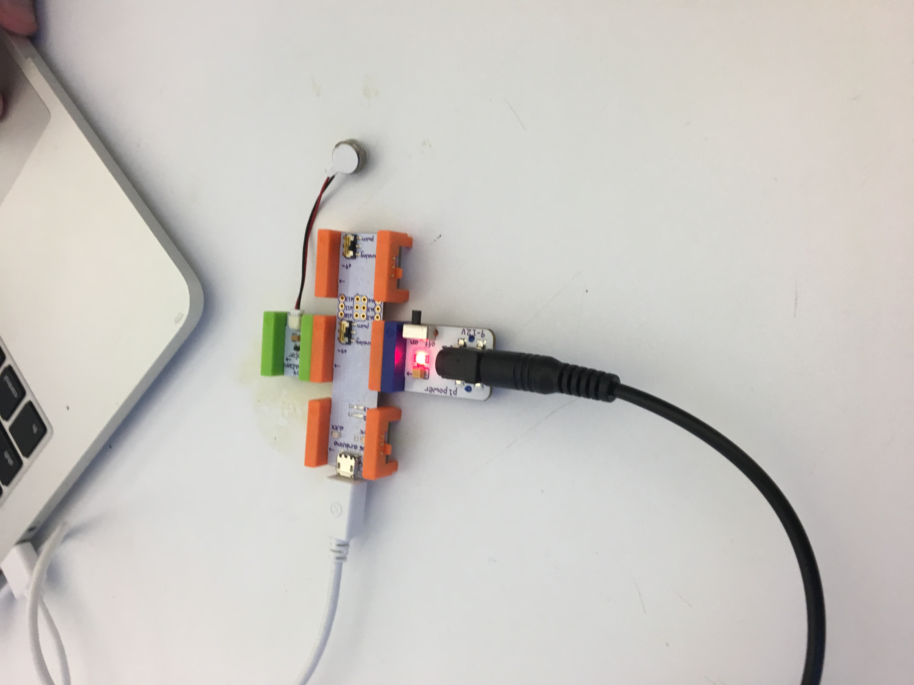
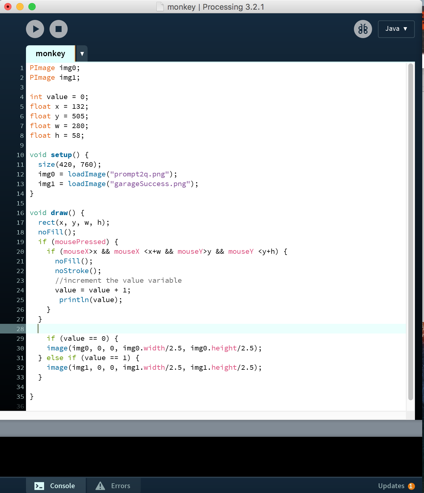
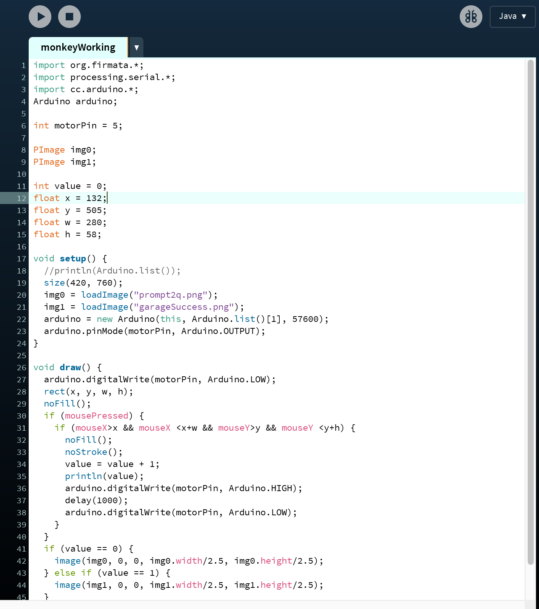
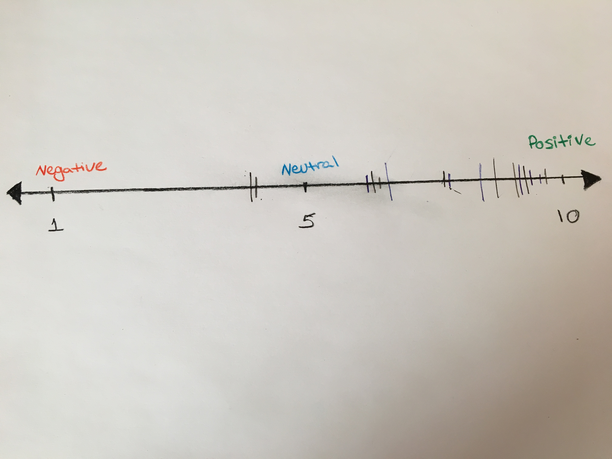

Step 1: Arudino
In order to create a prototype that would demonstrate the positive reinforcement of vibration it was necessary to code a 'successful' game interaction. The first step was being able to control the vibration motor from the Arduino instead of the littleBits app.
Step 2: Processing
Next I recreated the interaction of the user clicking the correct answer that is simulated using Marvel. The challenge was taking something that was created as a vector file and translating it into working code.
First I created a button that overlapped the button that was drawn on illustrator. The scenes created on illustrator were imported to processing. The code states that when the button is clicked, the background image changes, simulating the scene switch occurring in the game.
Step 3: Firmata
The last step was to control the arduino through processing. This was done by loading Firmata onto the arduino and running the processing sketch.
The press of the button associated with the correct choice triggers the motor to vibrate. This is a simulation of how the game would reward successful answers.
Step 4: User Testing
In previous tests I had determined that being able to squeeze the monkey's arm to generate a heartbeat made the users feel connected, made the toy seem friendly, and was engaging. I needed to determine if the vibration felt like a positive or negative reinforcement.
User testing. Connection between physical and digital prototypes.
After completing the above test, users were asked to place a mark indicating how they felt about the vibration.

The scale started at 0 for negative feelings, such as those felt during negative reinforcement. It was crucial that I made sure that the vibration did not make the users feel punished. 10 was positive, or feeling like the vibration was a reward for succeeding.
Most of the users felt like vibrations were positive. The lack of stuffing in the monkey made a few people concerned that the vibration was too strong. Should this be turned into a more complete prototype, I would like to be able to play with vibration patterns and strengths.
Amongst the users that felt like the vibrations were positive, not all felt that it symbolized a reward to them. There was a general consensus that the vibration made the physical prototype more engaging. One user said that it reminded them of Tickle Me Elmo. While the vibrations of this precedent aren't rewarding, they do make it fun to play with.